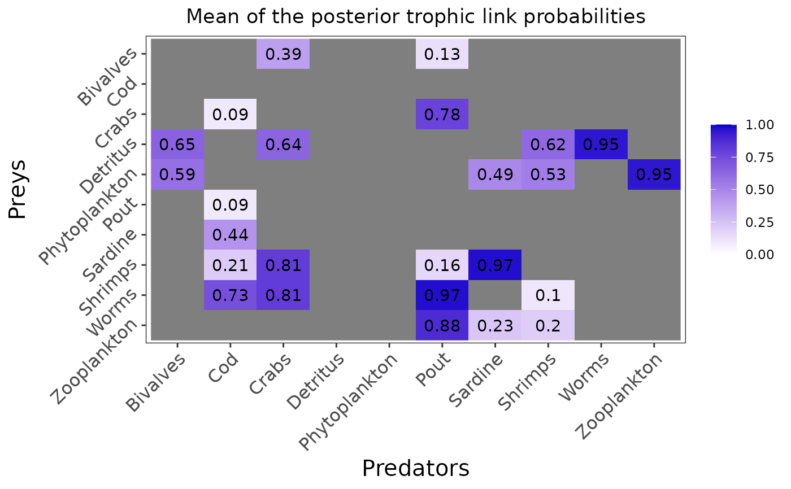

This function plots the posterior means or probability distribution(s) for one or the two variable(s) of interest : the trophic link probabilities ("eta") and/or the diet proportions ("PI").
The figure(s) can be saved as PNG using: save = TRUE, and the directory path to which
the figures are saved can be precised with: save_path = ".".
If no "pred" nor "prey" parameter is entered, the plot will be a raster plot with the mean priors for all the trophic groups.
If one predator name is entered as "pred", the probability distribution(s) will be plotted for all its prey(s) by default. Some specific prey(s) name(s) can also be entered because if a predator has 22 preys, plotting them all will make the plot hard to read. So you can specify the one or many prey(s) of interest and only display their corresponding probability distribution(s).
The "variable" parameter can be specified if one wants to plot the priors for only one variable ("PI" or "eta").
plot_results(
jags_output,
data,
pred = NULL,
prey = NULL,
variable = c("eta", "PI"),
save = FALSE,
save_path = "."
)Arguments
- jags_output
the mcmc.list object output by the run_model() function
- data
the preprocessed data list output by the preprocess_data() function
- pred
the predator name for which we want to plot the probability densities
- prey
the prey(s) name(s) for which we want to plot the probability densities
- variable
the variable(s) for which we want to plot the probability densities. By default we will plot the two variables of interest: eta and PI.
- save
A boolean describing whether the figure should be saved as PNG. By default the figures are not saved.
- save_path
A string describing the path to which the figures should be saved. By default the figures are saved in a temporary directory.
See also
plot_prior to plot the prior means or probability distribution(s),
plot_data to plot the input data
Examples
# \donttest{
realistic_biotracer_data <- read.csv(system.file("extdata", "realistic_biotracer_data.csv",
package = "EcoDiet"))
realistic_stomach_data <- read.csv(system.file("extdata", "realistic_stomach_data.csv",
package = "EcoDiet"))
data <- preprocess_data(biotracer_data = realistic_biotracer_data,
trophic_discrimination_factor = c(0.8, 3.4),
literature_configuration = FALSE,
stomach_data = realistic_stomach_data)
#> The model will investigate the following trophic links:
#> Bivalves Cod Crabs Detritus Phytoplankton Pout Sardine Shrimps
#> Bivalves 0 0 1 0 0 1 0 0
#> Cod 0 0 0 0 0 0 0 0
#> Crabs 0 1 0 0 0 1 0 0
#> Detritus 1 0 1 0 0 0 0 1
#> Phytoplankton 1 0 0 0 0 0 1 1
#> Pout 0 1 0 0 0 0 0 0
#> Sardine 0 1 0 0 0 0 0 0
#> Shrimps 0 1 1 0 0 1 1 0
#> Worms 0 1 1 0 0 1 0 1
#> Zooplankton 0 0 0 0 0 1 1 1
#> Worms Zooplankton
#> Bivalves 0 0
#> Cod 0 0
#> Crabs 0 0
#> Detritus 1 0
#> Phytoplankton 0 1
#> Pout 0 0
#> Sardine 0 0
#> Shrimps 0 0
#> Worms 0 0
#> Zooplankton 0 0
write_model(literature_configuration = FALSE)
mcmc_output <- run_model("EcoDiet_model.txt", data, run_param="test")
#>
#> Processing function input.......
#>
#> Done.
#>
#> Compiling model graph
#> Resolving undeclared variables
#> Allocating nodes
#> Graph information:
#> Observed stochastic nodes: 316
#> Unobserved stochastic nodes: 125
#> Total graph size: 1104
#>
#> Initializing model
#>
#> Adaptive phase, 500 iterations x 3 chains
#> If no progress bar appears JAGS has decided not to adapt
#>
#>
#> Burn-in phase, 500 iterations x 3 chains
#>
#>
#> Sampling from joint posterior, 500 iterations x 3 chains
#>
#>
#> Calculating statistics.......
#>
#> Done.
#>
#> /!\ Convergence warning:
#> Out of the 51 variables, 15 variables have a Gelman-Rubin statistic > 1.1.
#> You may consider modifying the model run settings.
#> The variables with the poorest convergence are: PI[10,8], PI[9,8], PI[8,6], PI[7,2], PI[5,1], PI[4,1], PI[6,2], PI[8,2], PI[1,6], PI[5,7].
#> JAGS output for model 'EcoDiet_model.txt', generated by jagsUI.
#> Estimates based on 3 chains of 1000 iterations,
#> adaptation = 500 iterations (sufficient),
#> burn-in = 500 iterations and thin rate = 1,
#> yielding 1500 total samples from the joint posterior.
#> MCMC ran for 0.244 minutes at time 2024-07-10 10:07:22.880347.
#>
#> mean sd 2.5% 50% 97.5% overlap0 f Rhat n.eff
#> eta[4,1] 0.651 0.085 0.482 0.657 0.805 FALSE 1 1.007 272
#> eta[5,1] 0.594 0.090 0.410 0.596 0.760 FALSE 1 1.002 751
#> eta[3,2] 0.086 0.057 0.010 0.073 0.221 FALSE 1 1.003 702
#> eta[6,2] 0.088 0.056 0.012 0.077 0.218 FALSE 1 1.000 1500
#> eta[7,2] 0.437 0.102 0.241 0.435 0.637 FALSE 1 1.017 128
#> eta[8,2] 0.212 0.085 0.074 0.202 0.406 FALSE 1 1.001 1500
#> eta[9,2] 0.727 0.092 0.533 0.734 0.891 FALSE 1 1.016 139
#> eta[1,3] 0.390 0.088 0.230 0.389 0.561 FALSE 1 1.012 165
#> eta[4,3] 0.638 0.085 0.463 0.642 0.799 FALSE 1 1.004 428
#> eta[8,3] 0.808 0.071 0.652 0.815 0.924 FALSE 1 1.004 405
#> eta[9,3] 0.811 0.069 0.660 0.814 0.926 FALSE 1 1.004 491
#> eta[1,6] 0.126 0.058 0.037 0.119 0.259 FALSE 1 1.010 236
#> eta[3,6] 0.782 0.072 0.622 0.789 0.903 FALSE 1 1.001 1386
#> eta[8,6] 0.156 0.061 0.054 0.150 0.289 FALSE 1 1.022 97
#> eta[9,6] 0.970 0.029 0.894 0.979 0.999 FALSE 1 1.001 1500
#> eta[10,6] 0.876 0.057 0.748 0.883 0.964 FALSE 1 1.000 1500
#> eta[5,7] 0.485 0.089 0.309 0.485 0.665 FALSE 1 1.012 175
#> eta[8,7] 0.968 0.030 0.889 0.977 0.999 FALSE 1 1.002 1500
#> eta[10,7] 0.232 0.075 0.107 0.225 0.397 FALSE 1 1.001 1462
#> eta[4,8] 0.616 0.105 0.401 0.620 0.805 FALSE 1 1.003 606
#> eta[5,8] 0.529 0.107 0.323 0.533 0.731 FALSE 1 1.004 500
#> eta[9,8] 0.100 0.065 0.014 0.089 0.262 FALSE 1 1.019 124
#> eta[10,8] 0.197 0.087 0.055 0.190 0.384 FALSE 1 1.018 114
#> eta[4,9] 0.948 0.050 0.826 0.962 0.999 FALSE 1 1.002 1500
#> eta[5,10] 0.954 0.044 0.844 0.968 0.999 FALSE 1 1.005 751
#> PI[4,1] 0.292 0.305 0.000 0.207 0.953 FALSE 1 1.907 5
#> PI[5,1] 0.708 0.305 0.047 0.793 1.000 FALSE 1 1.907 5
#> PI[3,2] 0.129 0.167 0.000 0.045 0.554 FALSE 1 1.186 16
#> PI[6,2] 0.209 0.204 0.000 0.159 0.678 FALSE 1 1.333 10
#> PI[7,2] 0.311 0.308 0.001 0.167 0.926 FALSE 1 1.963 5
#> PI[8,2] 0.162 0.183 0.000 0.099 0.634 FALSE 1 1.299 11
#> PI[9,2] 0.189 0.144 0.004 0.156 0.540 FALSE 1 1.043 54
#> PI[1,3] 0.176 0.232 0.000 0.059 0.780 FALSE 1 1.166 17
#> PI[4,3] 0.138 0.179 0.000 0.018 0.553 FALSE 1 1.014 169
#> PI[8,3] 0.285 0.197 0.006 0.261 0.741 FALSE 1 1.003 700
#> PI[9,3] 0.402 0.271 0.012 0.362 0.961 FALSE 1 1.141 21
#> PI[1,6] 0.074 0.122 0.000 0.005 0.407 FALSE 1 1.276 12
#> PI[3,6] 0.289 0.189 0.007 0.265 0.706 FALSE 1 1.100 25
#> PI[8,6] 0.069 0.142 0.000 0.000 0.504 FALSE 1 2.067 5
#> PI[9,6] 0.299 0.201 0.014 0.276 0.725 FALSE 1 1.052 44
#> PI[10,6] 0.269 0.187 0.006 0.245 0.691 FALSE 1 1.057 43
#> PI[5,7] 0.217 0.189 0.000 0.210 0.598 FALSE 1 1.195 14
#> PI[8,7] 0.486 0.237 0.040 0.505 0.969 FALSE 1 1.006 907
#> PI[10,7] 0.297 0.311 0.000 0.197 0.933 FALSE 1 1.050 46
#> PI[4,8] 0.215 0.216 0.000 0.159 0.727 FALSE 1 1.102 29
#> PI[5,8] 0.242 0.205 0.000 0.209 0.689 FALSE 1 1.017 139
#> PI[9,8] 0.177 0.256 0.000 0.006 0.787 FALSE 1 2.367 4
#> PI[10,8] 0.366 0.318 0.000 0.387 0.984 FALSE 1 2.583 4
#> PI[4,9] 1.000 0.000 1.000 1.000 1.000 FALSE 1 NA 1
#> PI[5,10] 1.000 0.000 1.000 1.000 1.000 FALSE 1 NA 1
#> deviance 866.380 11.078 847.100 865.663 891.100 FALSE 1 1.004 402
#>
#> **WARNING** Some Rhat values could not be calculated.
#> **WARNING** Rhat values indicate convergence failure.
#> Rhat is the potential scale reduction factor (at convergence, Rhat=1).
#> For each parameter, n.eff is a crude measure of effective sample size.
#>
#> overlap0 checks if 0 falls in the parameter's 95% credible interval.
#> f is the proportion of the posterior with the same sign as the mean;
#> i.e., our confidence that the parameter is positive or negative.
#>
#> DIC info: (pD = var(deviance)/2)
#> pD = 61.1 and DIC = 927.516
#> DIC is an estimate of expected predictive error (lower is better).
plot_results(mcmc_output, data)

plot_results(mcmc_output, data, pred = "Crabs")
plot_results(mcmc_output, data, pred = "Crabs",
variable = "PI", prey = c("Bivalves", "Shrimps"))
 # }
# }